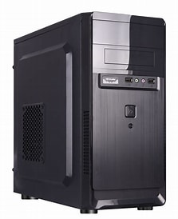

case

today we are going to learn about case
casethe first case was invented by jerry manock and He was from american the year 1977
its in a cass thats standed up and facing straight and its the main part of the computer and you can insert cds in it an the power and off button and this is whats inside the case
right now im going to talk about the stuff in the case
- the motherboard a giant circuit board that everything plugs into so they can talk to each other
- the CPU [central processing unit] the brain it does all the math and follows instrouctions
- the RAM [random access memory] it holds the stuff you are doing right now so the computer stays fast.
- the STORAGE [SSD HDD] the long term memory where your windows/ mac OS games and photos live forever. ssds are modern and fast hdds are old and slow.
- the GPU [graphics card] it handles the math for images and videos. some are bulit into the CPU some are giant seperate bricks for gaming.
- the PSU power supply its the heart it takes electricity from your walls and pumps it to every part at the right voltage
- the cooling fans or liquid computer get hard fans or water tubes pull heat away from the CPU and GPU so they dont melt.
- the cables the veints of the case data cables and power cables that carry info into electricity.